pacman::p_load(tidyverse, readxl, ggrepel, patchwork, ggthemes, hrbrthemes, ggiraph, plotly, readxl, gifski, gapminder, gganimate, ggdist, ggridges, ggstatsplot, plotly, crosstalk, DT, colorspace,gganimate, FunnelPlotR, knitr)Take-home_Ex01a
#Load Packages
#Import Data
survey <- read_excel("data/Data.xlsx")#Data Transformation
Check for Missing Values
CPRO CGEN CRAC CJOB CQUI TEIN TAIN TSII TOIN FEDU FVTP FCRA FTAP LHO1 LHO2 LHO3
0 0 0 49 4 1 1 6 0 23 23 2 102 512 402 616
LHO4 LCRE LSAV LWDA PPO1 PPO2 PPO3 PPO4 PPO5 ARO1 ARO2 ARO3 ARO4 ARO5
653 636 520 160 209 230 88 99 106 102 102 89 111 108 Rename Columns
names(survey)[c(1, 2, 3, 4, 5, 6, 7, 8, 9, 10, 11, 12, 13)] <- c("Province","Gender", "Race", "Industry", "Quintile", "Income", "Agri", "SvcInd", "Others", "Education", "Training", "Credit", "Technology")Rename Values
survey <- survey %>%
mutate(Province = recode(Province,
"1" = "Tuyen Quang",
"2" = "Quang Ninh",
"3" = "Ha Giang",
"4" = "Yen Bai",
"5" = "Bac Giang"))survey <- survey %>%
mutate(Gender = recode(Gender,
"1" = "Male",
"2" = "Female"))survey <- survey %>%
mutate(Race = recode(Race,
"1" = "King",
"2" = "Minorities"))survey <- survey %>%
mutate(Industry = recode(Industry,
"1" = "Agri",
"2" = "SvcInd",
"3" = "Others"))survey <- survey %>%
mutate(Education = recode(Education,
"1" = "Primary",
"2" = "Lower Sec",
"3" = "Upper Sec",
"4" = "Others",
.default = "No Response"))survey <- survey %>%
mutate(Training = recode(Training,
"1" = "Short",
"2" = "Long",
.missing = "0"))survey <- survey %>%
mutate(Credit = recode(Credit,
"1" = "No",
"2" = "Yes"))survey <- survey %>%
mutate(Technology = recode(Technology,
"1" = "Low",
"2" = "Adequate"))View(survey)#Key Observation 1 - Income
Comparison by Province
IncomeComparison <- survey %>%
group_by(Province) %>%
summarize(Total = sum(Income, na.rm = TRUE))ggplot(IncomeComparison, aes(x = reorder(Province, -Total), y = Total, fill = Province)) +
geom_col() +
scale_fill_brewer(palette = "Blues")+
theme_minimal() +
labs(title = "Total Income by Province",
x = "Province",
y = "Income") +
theme(axis.text.x = element_text(angle = 45, hjust = 1),
panel.grid.major = element_blank(),
panel.grid.minor = element_blank()
)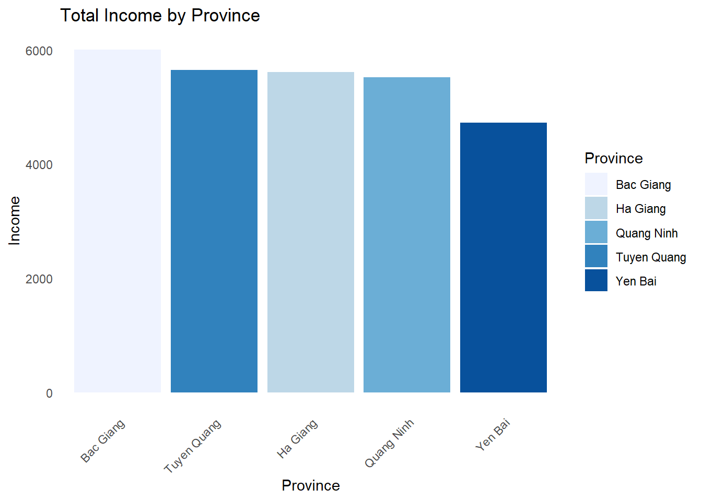
Review of average income
Average <- survey %>%
group_by(Province) %>%
summarize(
avg_income = mean(Income, na.rm = TRUE),
sample_size = n()
) %>%
arrange(desc(avg_income))ggplot(Average, aes(x = reorder(Province, avg_income), y = avg_income)) +
geom_col(fill = "#2c3e50") +
coord_flip() +
theme_minimal() +
labs(
title = "Average Monthly Income by Province",
x = "Province",
y = "Average Income (Mean)"
)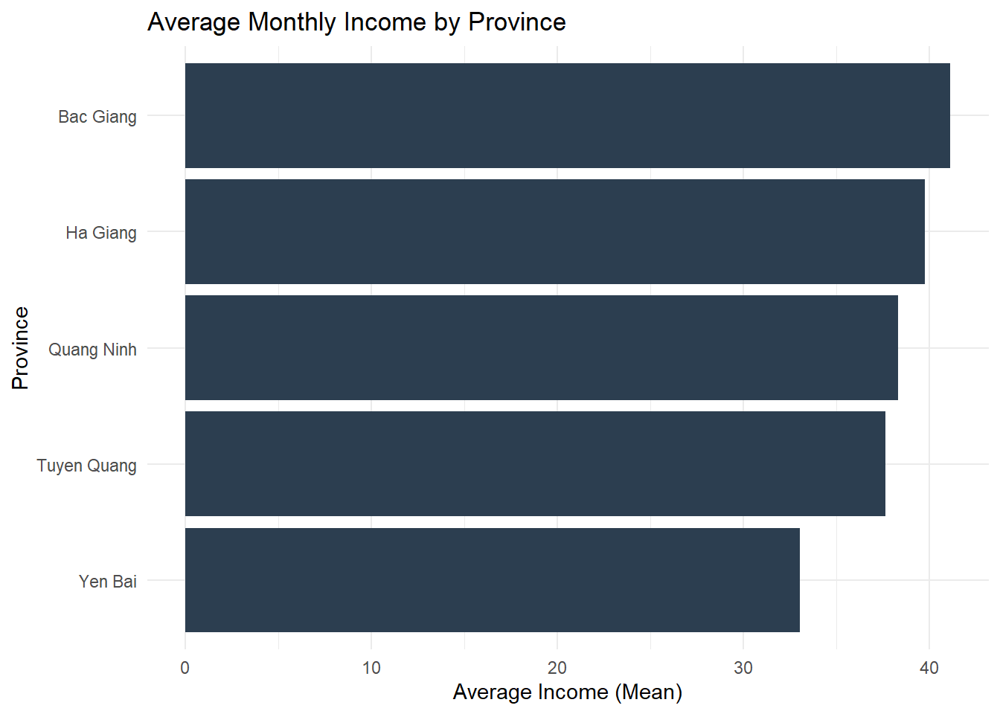
Income Distribution
ggplot(survey, aes(x = Province, fill = factor(Quintile))) +
geom_bar(position = "stack") +
scale_fill_brewer(palette = "Blues") +
theme_minimal() +
labs(title = "Total Count of People by Quintile and Province",
subtitle = "Bar height represents total sample size",
x = "Province",
y = "Number of Respondents",
fill = "Quintile") +
theme(
axis.text.x = element_text(angle = 45, hjust = 1),
panel.grid.major = element_blank(),
panel.grid.minor = element_blank()
)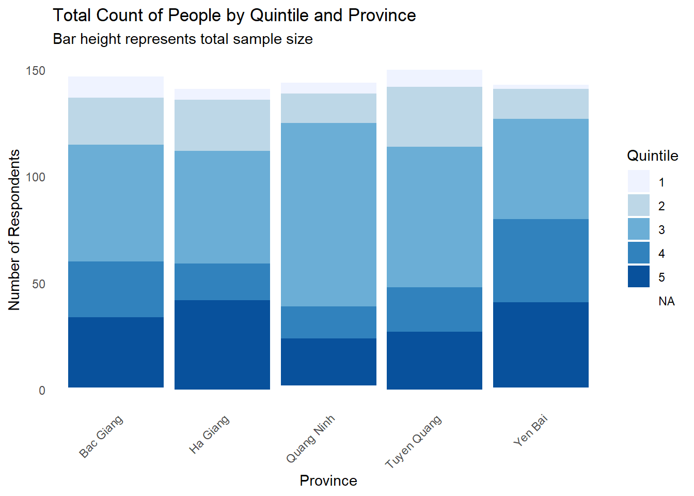
Violin Plot
survey_clean <- survey %>%
filter(!is.na(Quintile))
ggplot(survey_clean, aes(x = reorder(Province, Quintile, FUN = median),
y = Quintile,
fill = Province)) +
geom_violin(draw_quantiles = 0.5,
trim = FALSE,
alpha = 0.8,
bw = 0.5,
na.rm = TRUE) +
scale_y_reverse(breaks = 1:5, labels = c("1 (Top)", "2", "3", "4", "5 (Lowest)")) +
coord_cartesian(ylim = c(5.5, 0.5)) +
scale_fill_brewer(palette = "Blues") +
theme_minimal() +
labs(
title = "Income Disparity",
x = "Province",
y = "Income Quintile"
) +
theme(axis.text.x = element_text(angle = 45, hjust = 1),
legend.position = "none",
panel.grid.minor = element_blank()
)Warning: The `draw_quantiles` argument of `geom_violin()` is deprecated as of ggplot2
4.0.0.
ℹ Please use the `quantiles.linetype` argument instead.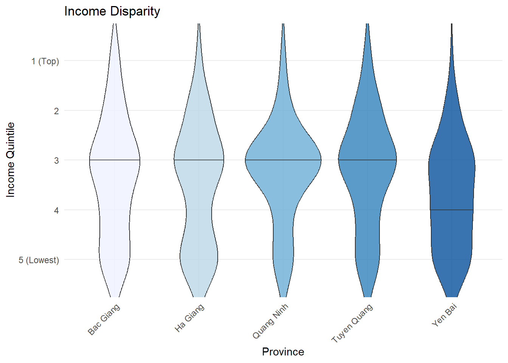
ggplot(survey_clean, aes(x = reorder(Province, Quintile, FUN = median),
y = Quintile,
fill = Province)) +
geom_violin(
draw_quantiles = 0.5,
scale = "width",
width = 0.9,
trim = TRUE,
alpha = 0.8,
bw = 0.5,
na.rm = TRUE
) +
scale_y_reverse(breaks = 1:5,
labels = c("1 (Top)", "2", "3", "4", "5 (Lowest)"),
limits = c(5, 1)) +
scale_fill_brewer(palette = "Blues") +
theme_minimal() +
labs(
title = "Income Disparity",
x = NULL, # This removes the X-axis name ("Province")
y = "Income Quintile"
) +
theme(
legend.position = "none",
axis.text.x = element_text(angle = 45, vjust = 1, hjust = 1),
panel.grid.major = element_blank(),
panel.grid.minor = element_blank(),
axis.line = element_line(color = "grey80")
)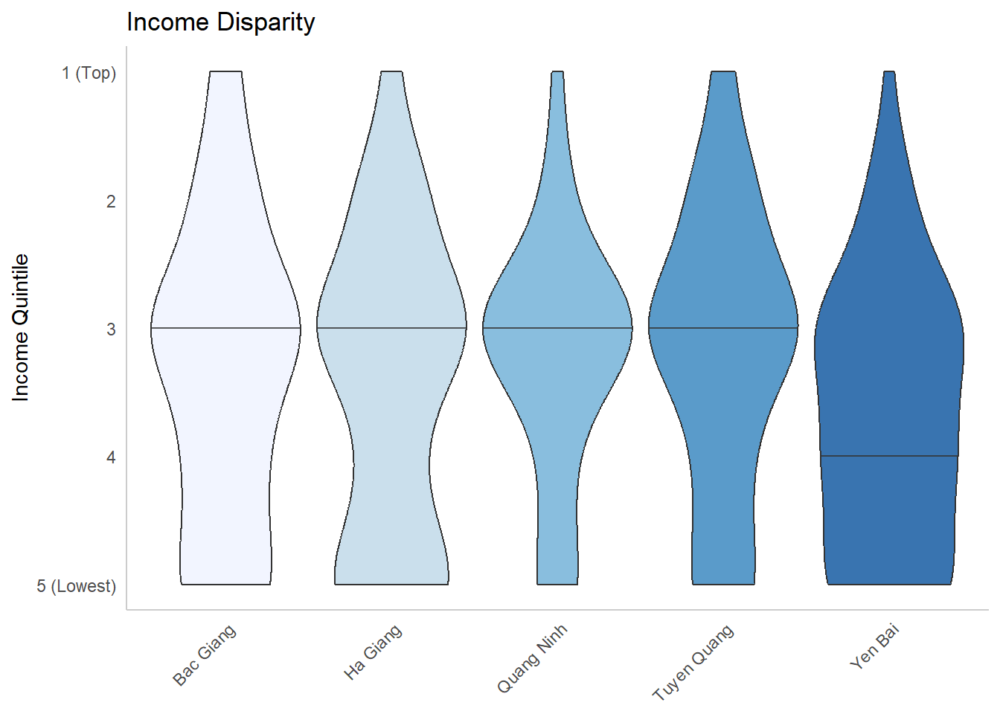
Source of Income
survey_summary <- survey %>%
group_by(Province) %>%
summarize(
Agriculture = sum(Agri, na.rm = TRUE),
ServicesIndustrial = sum(SvcInd, na.rm = TRUE),
Others = sum(Others, na.rm = TRUE)
) %>%
pivot_longer(cols = c(Agriculture, ServicesIndustrial, Others),
names_to = "Source",
values_to = "Amount")ggplot(survey_summary, aes(x = Province, y = Amount, fill = Source)) +
geom_col(position = "fill", alpha = 0.9) +
scale_y_continuous(labels = scales::percent) +
scale_fill_brewer(palette = "Blues") +
theme_minimal() +
labs(
title = "Sources of Income",
x = NULL,
y = "Percentage",
fill = "Income Source"
) +
theme(
axis.text.x = element_text(angle = 45, hjust = 1),
panel.grid.minor = element_blank())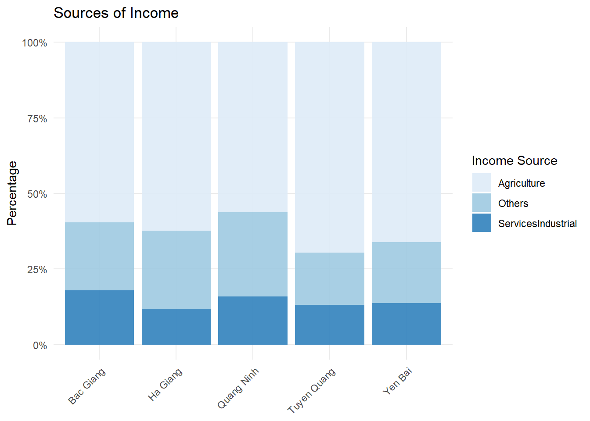
Education Impact -
survey_clean <- survey %>%
filter(!is.na(Education), !is.na(Income)) %>%
mutate(Education = factor(Education,
levels = c("Primary", "LowerSec", "UpperSec", "Others")))2. Create the Ridgeplot
survey %>%
filter(!is.na(Education), !is.na(Quintile)) %>%
ggplot(aes(x = Quintile,
y = reorder(Education, Quintile, FUN = median),
fill = Education)) +
geom_density_ridges(
scale = 1.2,
alpha = 0.8,
bw = 0.5,
rel_min_height = 0.01,
color = NA
) +
scale_x_reverse(breaks = 1:5,
labels = c("1 (Top)", "2", "3", "4", "5 (Low)")) +
scale_y_discrete(labels = c(
"LowerSec" = "Lower Secondary",
"UpperSec" = "Upper Secondary",
"Primary" = "Primary School",
"Others" = "Other"
)) +
scale_fill_brewer(palette = "Blues") +
theme_minimal() +
labs(
title = "Income Quintile Density by Education",
x = "Income Quintile",
y = NULL
) +
theme(
legend.position = "none",
panel.grid.major = element_blank(),
panel.grid.minor = element_blank(),
panel.border = element_blank(),
axis.text.y = element_text(face = "bold"),
axis.line.x = element_line(color = "grey80")
)Warning in geom_density_ridges(scale = 1.2, alpha = 0.8, bw = 0.5,
rel_min_height = 0.01, : Ignoring unknown parameters: `bw`Picking joint bandwidth of 0.235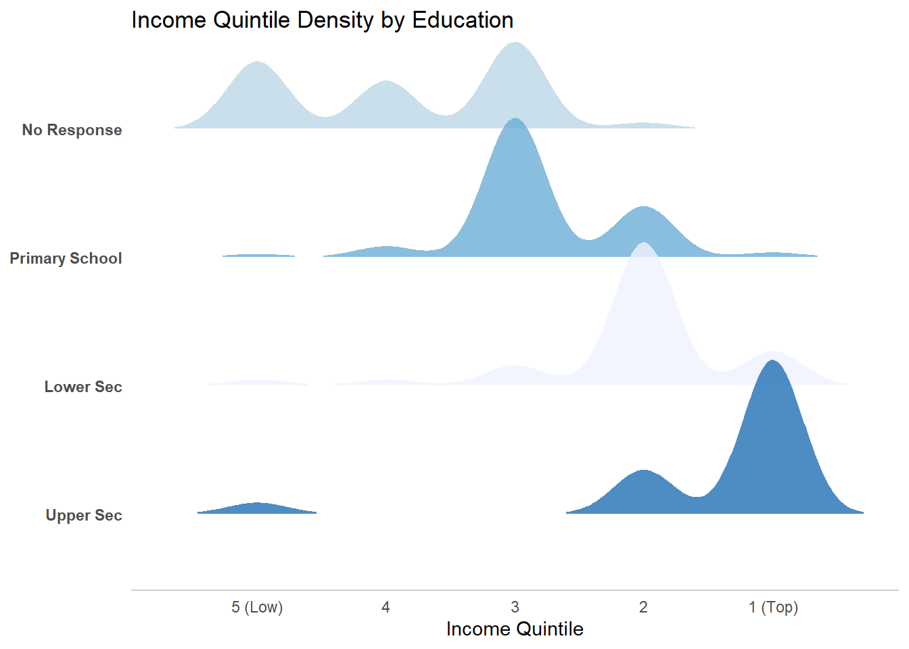
Credit Impact
survey %>%
filter(!is.na(Credit), !is.na(Quintile)) %>%
ggplot(aes(x = Quintile, y = Credit, fill = Credit)) +
geom_density_ridges(
scale = 1.2,
alpha = 0.7,
bw = 0.5,
rel_min_height = 0.01,
color = NA
) +
scale_x_reverse(breaks = 1:5, labels = c("1 (Top)", "2", "3", "4", "5 (Low)")) +
scale_fill_manual(values = c("Yes" = "#AED6F1", "No" = "pink")) +
theme_minimal() +
labs(
title = "Impact of Credit Accessibility",
x = "Income Quintile",
y = "Has Access to Credit?"
) +
theme(
legend.position = "none",
panel.grid.major = element_blank(),
panel.grid.minor = element_blank(),
axis.text.y = element_text(face = "bold", size = 12),
axis.line.x = element_line(color = "grey80")
)Warning in geom_density_ridges(scale = 1.2, alpha = 0.7, bw = 0.5,
rel_min_height = 0.01, : Ignoring unknown parameters: `bw`Picking joint bandwidth of 0.299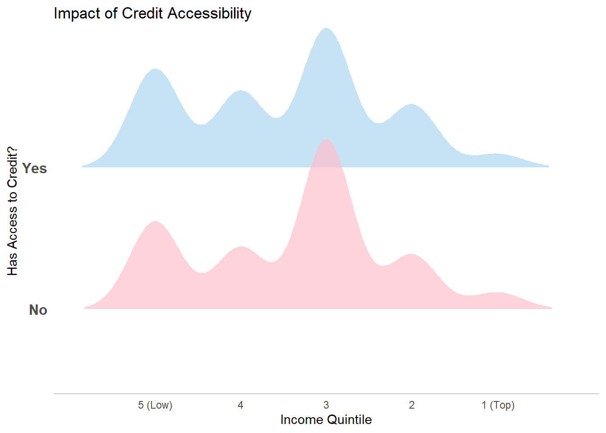
survey %>%
filter(Training %in% c("Long", "Short"),
!is.na(Quintile)) %>%
ggplot(aes(x = Quintile, y = Training, fill = Training)) +
geom_density_ridges(
scale = 1.2,
alpha = 0.7,
bw = 0.5,
rel_min_height = 0.01,
color = NA
) +
scale_x_reverse(breaks = 1:5, labels = c("1 (Top)", "2", "3", "4", "5 (Low)")) +
scale_fill_manual(values = c("Long" = "#AED6F1", "Short" = "pink")) +
theme_minimal() +
theme(
panel.grid.major = element_blank(),
panel.grid.minor = element_blank()
)Warning in geom_density_ridges(scale = 1.2, alpha = 0.7, bw = 0.5,
rel_min_height = 0.01, : Ignoring unknown parameters: `bw`Picking joint bandwidth of 0.257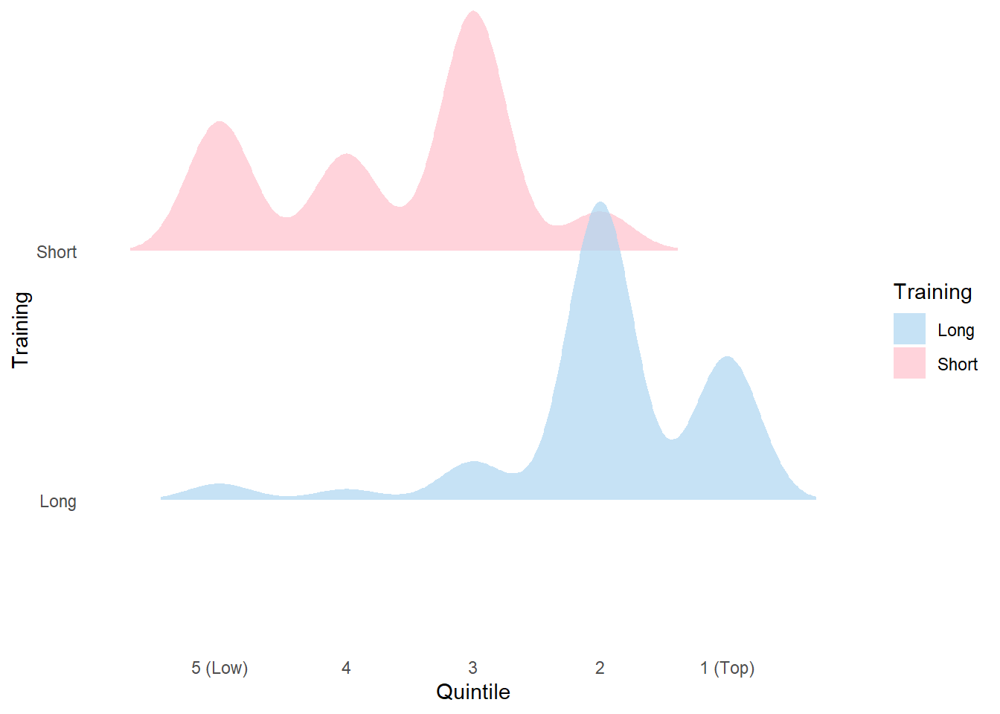
Technology Impact
survey %>%
mutate(
Technology = na_if(Technology, "0"),
Technology = na_if(Technology, ""),
Technology = fct_na_value_to_level(as.factor(Technology), level = "None"),
Technology = fct_relevel(Technology, "None", "Low", "Adequate")
) %>%
filter(!is.na(Agri), Agri> 0) %>%
ggplot(aes(x = Agri, y = Technology, fill = Technology)) +
geom_density_ridges(
scale = 1.3,
alpha = 0.7,
color = NA,
rel_min_height = 0.01
) +
scale_fill_manual(values = c(
"None" = "#D5D8DC", # Neutral Grey
"Low" = "#AED6F1", # Your Light Blue
"Adequate" = "#2E86C1" # Darker Blue for high impact
)) +
scale_x_continuous(labels = scales::label_dollar(), expand = c(0, 0)) +
theme_minimal() +
labs(
title = "Impact of Technology",
subtitle = "Comparing None, Low, and Adequate technology usage",
x = "Agricultural Income",
y = NULL
) +
theme(
legend.position = "none",
panel.grid = element_blank(),
axis.text.y = element_text(face = "bold", size = 11),
axis.line.x = element_line(color = "grey80")
)Picking joint bandwidth of 2.99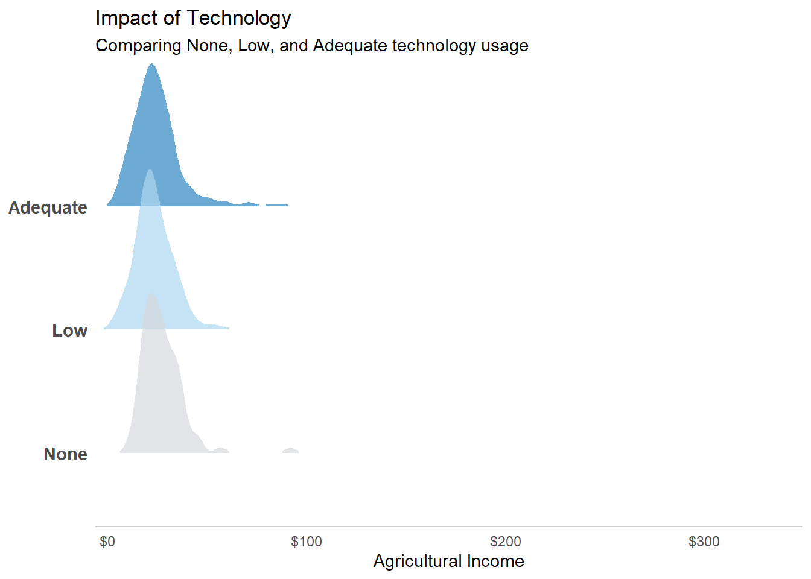
Raincloud
survey %>%
mutate(Technology = fct_relevel(Technology, "None", "Low", "Adequate")) %>%
ggplot(aes(x = Technology, y = Agri, fill = Technology)) +
# The "Cloud": Half-density plot
stat_halfeye(adjust = .5, width = .6, .width = 0, justification = -.3, point_colour = NA) +
# The "Rain": Jittered points
geom_dots(side = "left", justification = 1.1, binwidth = unit(0.02, "npc"), alpha = 0.5) +
scale_fill_manual(values = c("None" = "grey80", "Low" = "#AED6F1", "Adequate" = "#2E86C1")) +
theme_minimal() +
theme(panel.grid = element_blank()) +
labs(title = "Tech Impact: Income Distribution & Individual Data")Warning: There was 1 warning in `mutate()`.
ℹ In argument: `Technology = fct_relevel(Technology, "None", "Low",
"Adequate")`.
Caused by warning:
! 1 unknown level in `f`: NoneWarning: Removed 1 row containing missing values or values outside the scale range
(`stat_slabinterval()`).Warning: Removed 1 row containing missing values or values outside the scale range
(`geom_dotsinterval()`).Warning: The provided binwidth will cause dots to overflow the boundaries of the
geometry.
→ Set `binwidth = NA` to automatically determine a binwidth that ensures dots
fit within the bounds,
→ OR set `overflow = "compress"` to automatically reduce the spacing between
dots to ensure the dots fit within the bounds,
→ OR set `overflow = "keep"` to allow dots to overflow the bounds of the
geometry without producing a warning.
ℹ For more information, see the documentation of the `binwidth` and `overflow`
arguments of `?ggdist::geom_dots()` or the section on constraining dot sizes
in vignette("dotsinterval") (`vignette(ggdist::dotsinterval)`).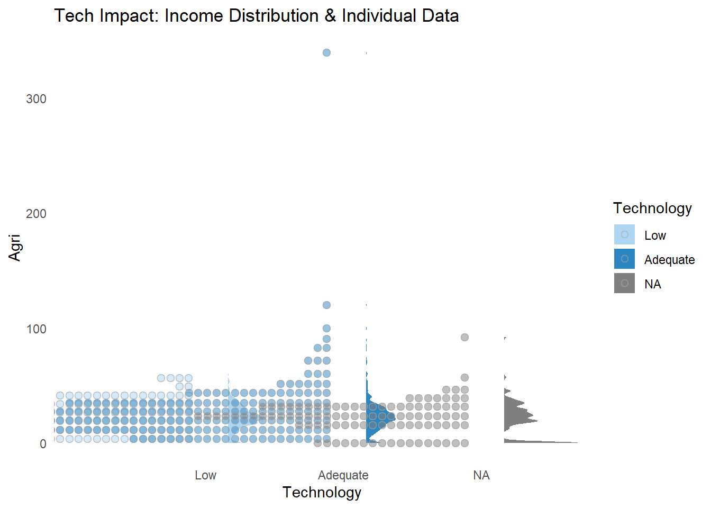
ggplot(survey, aes(x = Technology, y = Agri, fill = Technology)) +
geom_boxplot(width = 0.6, alpha = 0.7, outlier.size = 1) +
facet_wrap(~Province, nrow = 1) + # One small box per province
scale_y_continuous(labels = scales::label_dollar()) +
theme_minimal() +
theme(panel.grid = element_blank(), axis.text.x = element_text(angle = 45, hjust = 1))Warning: Removed 1 row containing non-finite outside the scale range
(`stat_boxplot()`).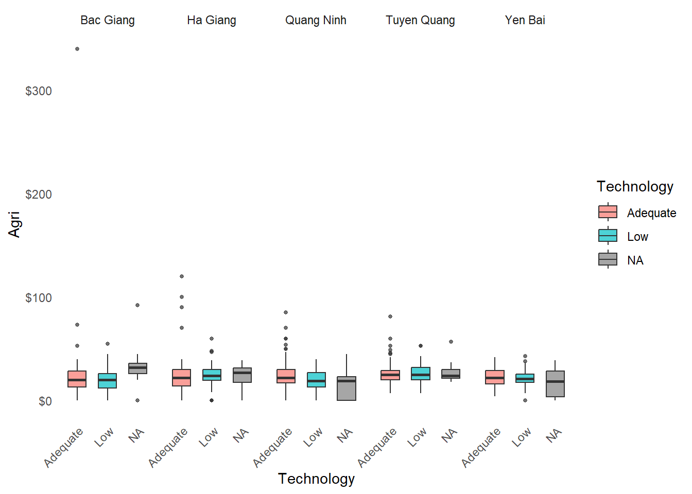
survey %>%
mutate(
Technology = na_if(Technology, "0"),
Technology = na_if(Technology, ""),
Technology = fct_na_value_to_level(as.factor(Technology), level = "None"),
Technology = fct_relevel(Technology, "None", "Low", "Adequate")
) %>%
filter(!is.na(Province), Province != "", Agri> 0) %>%
ggplot(aes(x = Technology, y = Agri, fill = Technology)) +
geom_boxplot(width = 0.6, alpha = 0.7, outlier.alpha = 0.3) +
facet_wrap(~Province, nrow = 1) +
scale_fill_manual(values = c(
"None" = "#D5D8DC", # Grey
"Low" = "#AED6F1", # Light Blue
"Adequate" = "#2E86C1" # Dark Blue
)) +
scale_y_continuous(labels = scales::label_dollar()) +
theme_minimal() +
labs(
title = "Agricultural Income by Technology",
x = NULL,
y = "Annual Agricultural Income"
) +
theme(
legend.position = "none",
panel.grid.major.x = element_blank(), # Cleaner look
panel.grid.minor = element_blank(),
axis.text.x = element_text(angle = 45, hjust = 1, face = "bold"),
strip.background = element_rect(fill = "grey", color = NA), # Province labels
strip.text = element_text(face = "bold")
)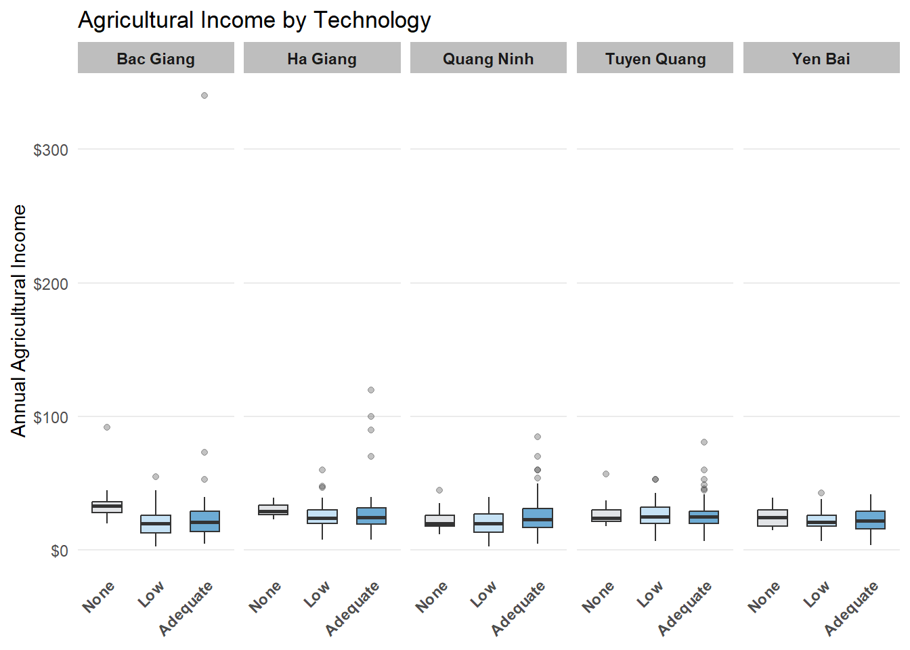
survey %>%
mutate(
Technology = na_if(Technology, "0"),
Technology = na_if(Technology, ""),
Technology = fct_na_value_to_level(as.factor(Technology), level = "None"),
Technology = fct_relevel(Technology, "None", "Low", "Adequate")
) %>%
filter(!is.na(Province), Province != "") %>%
group_by(Province, Technology) %>%
summarise(Total_Agri = sum(Agri, na.rm = TRUE), .groups = 'drop') %>%
ggplot(aes(x = Province, y = Total_Agri, fill = Technology)) +
geom_col(position = position_dodge(preserve = "single"), width = 0.7) +
scale_fill_manual(values = c(
"None" = "#D5D8DC",
"Low" = "#AED6F1",
"Adequate" = "#2E86C1"
)) +
scale_y_continuous(labels = scales::label_dollar(scale = 1/1e3, suffix = "K")) +
theme_minimal() +
labs(
title = "Total Agricultural Wealth Generated by Technology Level",
subtitle = "Aggregated income across 5 provinces (Income in Thousands)",
x = NULL,
y = "Sum of Agricultural Income",
fill = "Tech Level"
) +
theme(
panel.grid.major.x = element_blank(),
panel.grid.minor = element_blank(),
axis.text.x = element_text(face = "bold"),
legend.position = "top"
)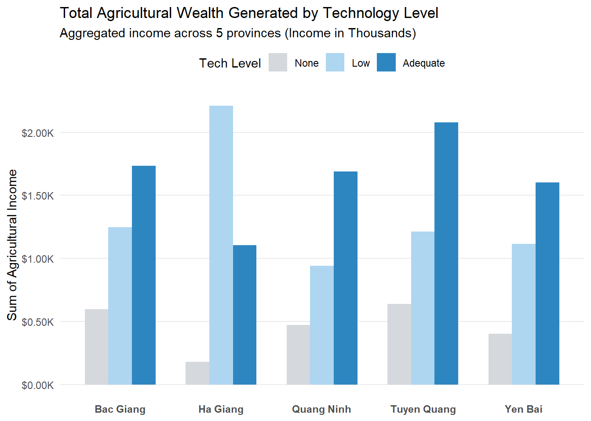
survey %>%
filter(Province == "Ha Giang") %>%
group_by(Technology) %>%
summarise(
Total_Income = sum(Agri, na.rm = TRUE),
Average_Income = mean(Agri, na.rm = TRUE),
Number_of_Farmers = n()
)# A tibble: 3 × 4
Technology Total_Income Average_Income Number_of_Farmers
<chr> <dbl> <dbl> <int>
1 Adequate 1106 25.7 43
2 Low 2212 24.6 90
3 <NA> 181 22.6 8